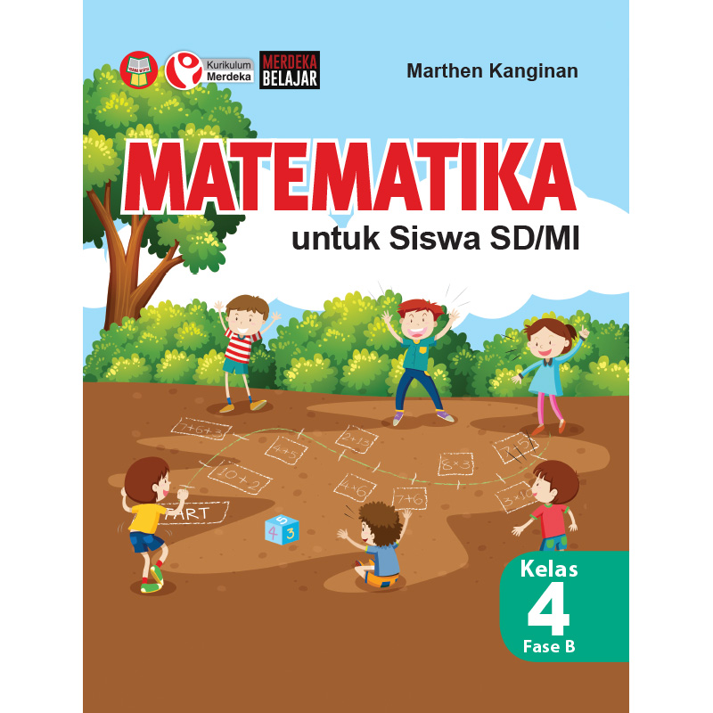
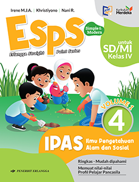
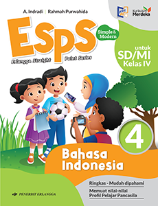

Di sini tersedia materi interaktif untuk meningkatkan pengetahuan anak SD.

Pahami dasar-dasar matematika dengan konsep yang mudah dimengerti.

Temukan keajaiban ilmu pengetahuan alam di sekitar kita!

Kenali sejarah, geografi, dan budaya bangsa Indonesia.